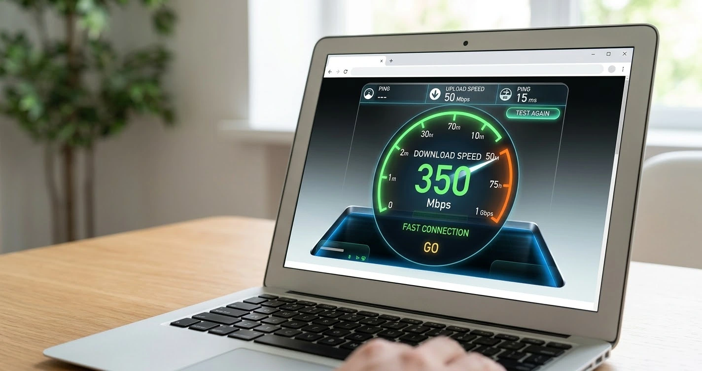
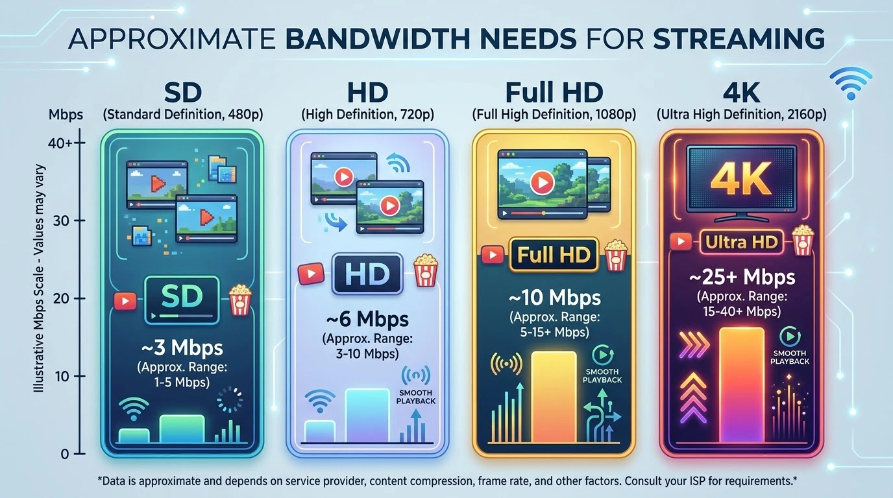
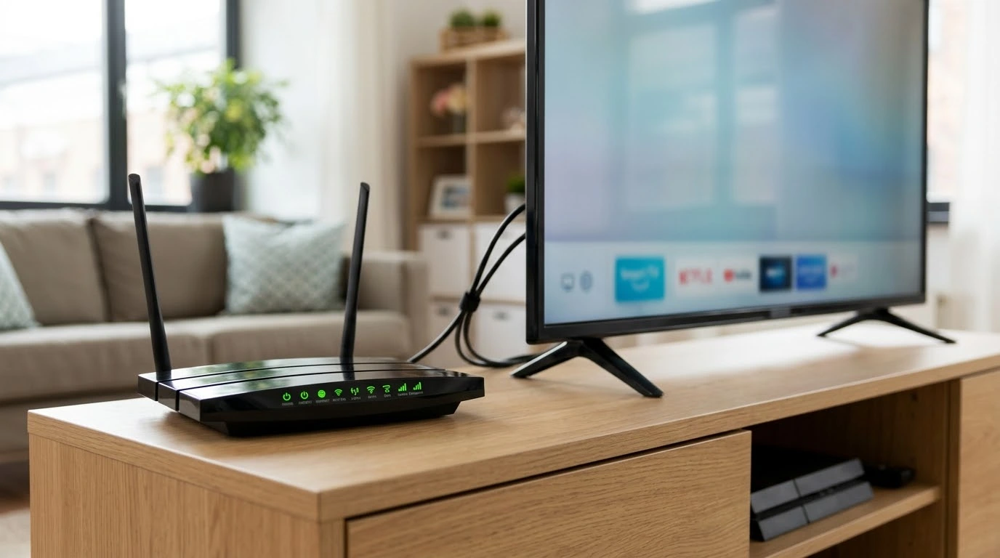

What Internet Speed Do You Need for IPTV?

Speed requirements depend on the quality of the stream and on how many screens use your connection at once. These are rough working guidelines, not exact figures, because bitrates vary between providers.
Rough bandwidth guidelines
- Standard definition: about 3 to 5 Mbps.
- HD (720p): about 5 to 8 Mbps.
- Full HD (1080p): about 8 to 12 Mbps.
- 4K: about 25 Mbps or more.

Multiply by the number of screens
If two TVs stream Full HD while someone else browses, add the figures together and keep spare capacity.
Leave headroom
A stable connection with extra room works better than one that barely meets the number. Aim for a margin of at least 30 to 50 percent.
Download speed vs stability
Wi-Fi vs Ethernet
Ethernet is more reliable. On Wi-Fi, signal strength and interference matter as much as the plan speed.
Latency and congestion
Peak evening hours can reduce real-world speeds.

How to test
Run a speed test on the viewing device, at the time you normally watch. If results are low, follow our buffering fixes.
Understand the technology behind these numbers in what IPTV is, or begin a setup with the Firestick guide.
Frequently asked questions
Is 10 Mbps enough for IPTV?
It is usually enough for one HD stream if nothing else is using the connection.
Do I need fibre?
Not necessarily, but a stable connection helps, especially for 4K.
Does upload speed matter?
Not for watching. Download speed and stability are what count.